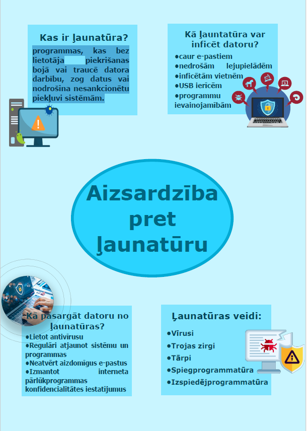

Programmas, kas bez lietotāja piekrišanas bojā vai traucē datora darbību, zog datus vai nodrošina nesankcionētu piekļuvi sistēmām.

Aizsardzība pret ļaunatūru ir ļoti svarīga, lai pasargātu datoru un personīgos datus. Ir jābūt uzmanīgam un jāievēro drošības noteikumi, kā arī jāizmanto atbilstoši aizsardzības rīki.